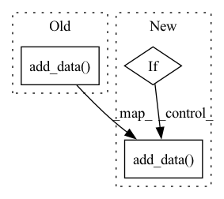

Pattern ID :36516
Before Change
def add_text(self, tag: str, text_string: str):
if tag not in self._tables:
self._tables[tag] = wandb.Table(columns=[train_step, tag])
self._tables[tag].add_data( self._axes[train_step], text_string)
def add_scalar(self, tag: str, scalar_value: Union[float, int]):
info = {tag: scalar_value}
info.update(self._axes)After Change
self.current_epoch.on_epoch_end()
def add_text(self, tag: str, text_string: str):
if (self._is_local_main_process):
if tag not in self._tables:
self._tables[tag] = wandb.Table(columns=[train_step, tag])
self._tables[tag].add_data( self._axes[train_step], text_string)
def add_scalar(self, tag: str, scalar_value: Union[float, int]):
info = {tag: scalar_value}
info.update(self._axes)In pattern: SUPERPATTERN
Frequency: 5
Non-data size: 3
Instances Fragment ID: 103642111
Project Name: rucaibox/textbox
Commit Name: e687aa843e2ee3b2be5f8ab2b2977d72f44f2e3d
Time: 2022-07-12
Author: zhipeng_chen@ruc.edu.cn
File Name: textbox/utils/dashboard.py
M Class Name: SummaryTracker
N Class Name: SummaryTracker
M Method Name: add_text(3)
N Method Name: add_text(3)
M Parent Class:
N Parent Class:
M File Name: textbox/utils/dashboard.py
N File Name: textbox/utils/dashboard.py
M Start Line: 102
M End Line: 104
N Start Line: 105
N End Line: 110
Before Change
cache_data.append(pred.item()) // individual class score
else:
cache_data.extend([gt, torch.max(predict.detach(), dim=0)[1]])
summary_table.add_data( *cache_data)
_log_media(tag=tag, media=summary_table, logger=logger)
def mapping_idx_label(idx: int, label_mapping: Dict[int, str]):After Change
else:
cache_data.extend([gt, torch.max(predict.detach(), dim=0)[1]])
if "Train" in tag:
self.train_summary_table.add_data( *cache_data)
else:
self.valid_summary_table.add_data(*cache_data)
def on_fit_end(self, trainer: "pl.Trainer", pl_module: "pl.LightningModule") -> None: Fragment ID: 103642116
Project Name: uetailab/uetai
Commit Name: 62b965e2797590d81c7da3b132f936887ea1b6d6
Time: 2021-10-04
Author: manhdung20112000@gmail.com
File Name: src/uetai/callbacks/image_monitor.py
M Class Name: ClassificationMonitor
N Class Name: ClassificationMonitor
M Method Name: add_image(4)
N Method Name: add_image(4)
M Parent Class: ImageMonitorBase
N Parent Class: ImageMonitorBase
M File Name: src/uetai/callbacks/image_monitor.py
N File Name: src/uetai/callbacks/image_monitor.py
M Start Line: 167
M End Line: 191
N Start Line: 183
N End Line: 204
Before Change
done_flags_placeholder = env_wrapper.cuda_data_manager.pull_data_from_device(
"_done_"
)
tensor_feed.add_data(
name=f"{_DONE_FLAGS}_batch",
data=np.zeros(
(training_batch_size_per_env,) + done_flags_placeholder.shape,
dtype=np.int32,
),
)
// Push all the placeholders to the device (GPU)
env_wrapper.cuda_data_manager.push_data_to_device(
tensor_feed, torch_accessible=TrueAfter Change
// Push done flags placeholders for the roll-out batch to the device
// (if not already pushed)
name = f"{_DONE_FLAGS}_batch"
if not env_wrapper.cuda_data_manager.is_data_on_device(name):
done_flags_placeholder = env_wrapper.cuda_data_manager.pull_data_from_device(
"_done_"
)
tensor_feed.add_data(
name=name,
data=np.zeros(
(training_batch_size_per_env,) + done_flags_placeholder.shape,
dtype=np.int32,
),
)
// Push all the placeholders to the device (GPU)
env_wrapper.cuda_data_manager.push_data_to_device(
tensor_feed, torch_accessible=True Fragment ID: 103642113
Project Name: salesforce/warp-drive
Commit Name: 0433121531b751f4a4d3ebbeed2aa9495d9d4b47
Time: 2022-02-07
Author: sunil.srinivasa@salesforce.com
File Name: warp_drive/training/utils/data_loader.py
M Class Name: AnonimousClass
N Class Name: AnonimousClass
M Method Name: _create_and_push_data_placeholders_helper(5)
N Method Name: _create_and_push_data_placeholders_helper(5)
M Parent Class:
N Parent Class:
M File Name: warp_drive/training/utils/data_loader.py
N File Name: warp_drive/training/utils/data_loader.py
M Start Line: 150
M End Line: 282
N Start Line: 200
N End Line: 337
Before Change
"Action spaces can be of type "Discrete" or "MultiDiscrete""
)
tensor_feed.add_data(
name=f"{_ACTIONS}_batch" + suffix,
data=np.zeros(
(training_batch_size_per_env,)
+ (
num_envs,
num_agents,
)
+ (num_action_types,),
dtype=np.int32,
),
)
// Push rewards to the device
rewards_placeholder = np.zeros((num_envs, num_agents), dtype=np.float32)
tensor_feed.add_data(name=_REWARDS + suffix, data=rewards_placeholder)After Change
"Action spaces can be of type "Discrete" or "MultiDiscrete""
)
if push_data_batch_placeholders:
tensor_feed.add_data(
name=f"{_ACTIONS}_batch" + suffix,
data=np.zeros(
(training_batch_size_per_env,)
+ (
num_envs,
num_agents,
)
+ (num_action_types,),
dtype=np.int32,
),
)
// Push rewards to the device
rewards_placeholder = np.zeros((num_envs, num_agents), dtype=np.float32)
tensor_feed.add_data(name=_REWARDS + suffix, data=rewards_placeholder) Fragment ID: 103642112
Project Name: salesforce/warp-drive
Commit Name: d556fbf1dcd01e40513a588b687f4c8bae364242
Time: 2022-02-11
Author: sunil.srinivasa@salesforce.com
File Name: warp_drive/training/utils/data_loader.py
M Class Name: AnonimousClass
N Class Name: AnonimousClass
M Method Name: _create_and_push_data_placeholders_helper(6)
N Method Name: _create_and_push_data_placeholders_helper(5)
M Parent Class:
N Parent Class:
M File Name: warp_drive/training/utils/data_loader.py
N File Name: warp_drive/training/utils/data_loader.py
M Start Line: 300
M End Line: 337
N Start Line: 208
N End Line: 347
Before Change
Add data row-wise to the initialized table.
self.eval_table.add_data(
self._wandb.Image(fake_img),
self._wandb.Image(sr_img),
self._wandb.Image(hr_img),
psnr,
ssim
)
def log_eval_table(self, commit=False):
Log the tableAfter Change
Add data row-wise to the initialized table.
if psnr is not None and ssim is not None:
self.eval_table.add_data(
self._wandb.Image(fake_img),
self._wandb.Image(sr_img),
self._wandb.Image(hr_img),
psnr,
ssim
)
else:
self.infer_table.add_data(
self._wandb.Image(fake_img),
self._wandb.Image(sr_img), Fragment ID: 103642114
Project Name: janspiry/image-super-resolution-via-iterative-refinement
Commit Name: ac2b2226edcb0cda2617af184f0584f948c1e54a
Time: 2022-01-12
Author: mein2work@gmail.com
File Name: core/wandb_logger.py
M Class Name: WandbLogger
N Class Name: WandbLogger
M Method Name: log_eval_data(6)
N Method Name: log_eval_data(6)
M Parent Class:
N Parent Class:
M File Name: core/wandb_logger.py
N File Name: core/wandb_logger.py
M Start Line: 76
M End Line: 82
N Start Line: 94
N End Line: 109